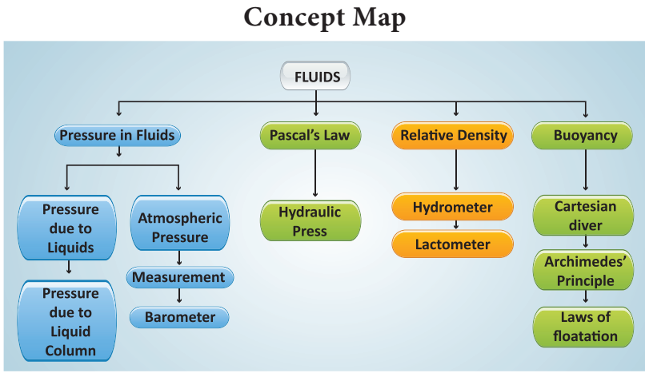
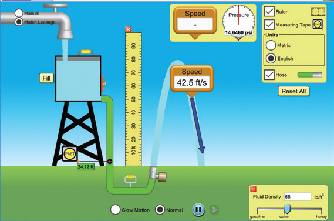
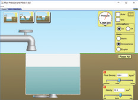
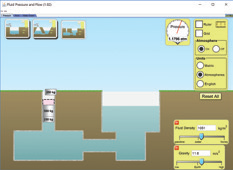
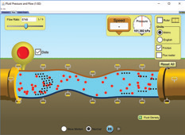

1. The size of an air bubble rising up in water
Bracket OPEN a bracket closed decreases
Bracket OPEN b bracket closed increases
Bracket OPEN c bracket closed remains same Bracket OPEN d bracket closed may increase or decrease
2. Clouds float in atmosphere because of their low
Bracket OPEN a bracket closed density
Bracket OPEN b bracket closed pressure
Bracket OPEN c bracket closed velocity
Bracket OPEN d bracket closed mass
3. In a pressure cooker, the food is cooked faster because
Bracket OPEN a bracket closed pressure lowers the boiling point.
Bracket OPEN b bracket closed increased pressure raises the boiling point.
Bracket OPEN c bracket closed decreased pressure raises the boiling point.
Bracket OPEN d bracket closed increased pressure lowers the melting point.
4. An empty plastic bottle closed with an airtight stopper is pushed down into a bucket filled with water. As the bottle is pushed down, there is an increasing force on the bottom. This is because,
Bracket OPEN a bracket closed more volume of liquid is displaced. Bracket OPEN b bracket closed more weight of liquid is displaced.
Bracket OPEN c bracket closed pressure increases with depth. Bracket OPEN d bracket closed All the above.
1. The weight of the body immersed in a liquid appears to be dash than its actual weight.
2. The instrument used to measure atmospheric pressure is dash
3. The magnitude of buoyant force acting on an object immersed in a liquid depends on dash of the liquid.
4. A drinking straw works on the existence of dash
1. The weight of fluid displaced determines the buoyant force on an object.
2. The shape of an object helps to determine whether the object will float or not.
3. The foundations of high-rise buildings are kept wide so that they may exert more pressure on the ground.
4. Archimedes’ principle can also be applied to gases.
5. Hydraulic press is used in the extraction of oil from oil seeds.
Density h rho g
Pascal’s law Milk
Pressure exerted by a fluid mass per volume
Lactometer Pressure
1. On what factors the pressure exerted by the liquid depends on question mark
2. Why does a helium balloon float in air question mark
3. Why it is easy to swim in sea water than in river water question mark
4. What is meant by atmospheric pressure question mark
5. State Pascal’s law question mark.
1. With an appropriate illustration prove that the force acting on a smaller area exerts a greater pressure.
2. Describe the construction and working of mercury barometer.
3. How does an object’s density determine whether the object will sink or float in water question mark
4. Explain the construction and working of a hydrometer with diagram.
5. State the laws of flotation.
Mark the correct answer as:
1. Assertion: To float, body must displace liquid whose weight is equal to the actual weight.
Reason: The body will experience no net downward force in that case.
2. Assertion: Pascal’s law is the working principle of a hydraulic lift.
Pressure is thrust per unit area.
Bracket OPEN a bracket closed If both assertion and reason are true and reason is the correct explanation of assertion.
Bracket OPEN b bracket closed If both assertion and reason are true but reason is not the correct explanation of assertion.
Bracket OPEN c bracket closed If assertion is true but reason is false.
Bracket OPEN d bracket closed If assertion is false but reason is true.
1. A block of wood of weight 200 g floats on the surface of water. If the volume of block is 300 cubic cm, calculate the upthrust due to water.
2. Density of mercury is 13600 kg m power minus 3. Calculate the relative density.
3. The density of water is 1 g cm power minus 3. What is its density in S.I. units question mark
4. Calculate the apparent weight of wood floating on water if it weighs 100 g in air.
1. How high does the mercury level in barometer stand on a day when atmospheric pressure is 98.6 k Pa question mark
2. How does a fish manage to rise up and move down in water question mark
3. If you put one ice cube in a glass of water and another in a glass of alcohol, what would you observe question mark Explain your observations.
4. Why does a boat with a hole in the bottom would eventually sink question mark
1.Fundamentals of Physics - By David Halliday and Robert Resnick.
2. I C S E Concise Physics - By Selina publisher.
3. Physics - By Tower, Smith Tuston and Cope.
https://www.teachengineering.org/lessons/view/cub_airplanes_lesson04 http://www.cyberphysics.co.uk/topics/earth/atmosphr/atmospheric_pressure.htm http://discovermagazine.com/2003/mar/featscienceof http://northwestfloatcenter.com/how-flotationcan-help-your-heart/
concept map image was given below

Fluid
Experiment with fluid Pressure and Flow using virtual simulator

Steps
Type the given URL to reach “pHET Simulation” page and download the “java” file of“Fluid Pressure and Flow”.
Open the “java” file. Open the water tap and observe the “Pressure” fluctuations by increasing“Fluid density” and “Gravity”.
Select the third picture and drop down a weight scales to transform weight into pressure.
Switch to “Flow” tab from the top to simulate fluid motion under a given shape and pressure. Click the “red” button to drop dots into the fluid and alter the pipe shape by dragging the yellow holders.



Step 1 Step 2 Step 3 Step 4images given below
Fluid Pressure and Flow Simulator
URL: https://phet.colorado.edu/en/simulation/fluid-pressure-and-flow or Scan the QR Code.